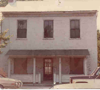

Clay Haus Restaurant
This lovely haunted restaurant in Somerset was built between 1812 and 1820 on the old Zane's Trace. It was originally a private home, and like all of the other buildings on what is now State Route 22/West Main Street, the modern basement was once ground level. Resurfacing and rebricking of Zane's Trace brought the level up a bit at a time, to a total of five feet or so, and now what was once the second floor is the what you step into from the sidewalk.

This photo shows the house at 123 West Main Street in 1978, shortly after Betty Snider bought it and began renovations. She named it for her German-American father, Clay, who is shown here during the process of digging the basement level out by hand.
While they excavated the dirt floor the Sniders found evidence of a structure on the spot long before even the present one; they theorized that a log cabin may have stood there in the days when Somerset was a wilderness trading post. Many of the items they unearthed--Civil War buttons and bullets, toys and trinkets, animal bones from a cooking fire--are now on display in a glass case.
The Clay Haus is definitely reputed to be haunted by any number of spirits, figures from its history and Somerset's history. Ghostly people, men and women, are seen on the stairs, and strange noises are heard by employees working late at night.
Three men are seen sometimes on the staircase, as solid as anyone else until they fade away. They are clean-shaven men in dark, old-fashioned clothes. One of them in particular seems to be active, appearing solo on a second-floor landing near the Blue Room dining room. But the stairs seem to be the focal point of the vast majority of the activity. The footsteps--sometimes measured and solid, sometimes "scurrying"--are such a constant feature that employees have grown used to it and rarely get frightened. Betty, the owner, is quoted on the official site as saying, "[T]hey are friendly spirits. I think they've learned to live with us."
At the Clay Haus you can have a great meal and ghost hunt (sort of) at the same time. For more information or to make a reservation, call them at (740) 743-1326. You certainly won't find a better restaurant in the area.
Clay Haus Restaurant: Official Site
Clay Haus.com: Unseen Guests
Back
Sources
Shipley, Tonya and Kathy Thompson. "Skeptic, Believer Visit Area's 'Haunted Places.'" Zanesville Times Recorder, 23 Oct. 2005.